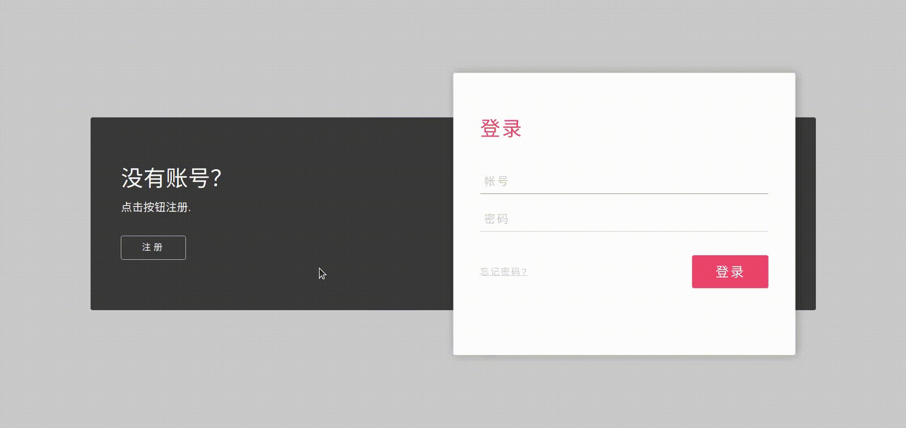
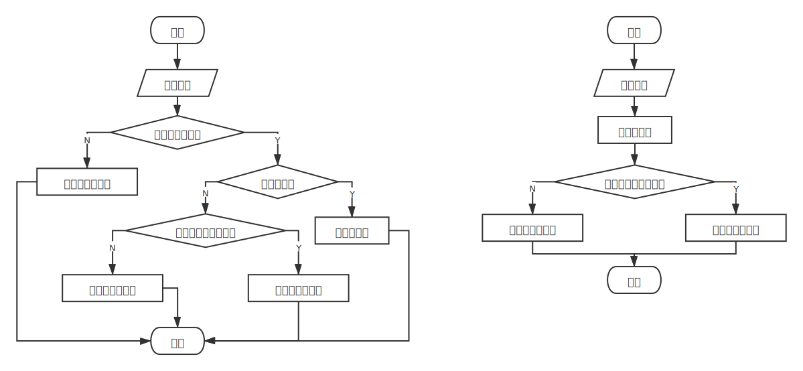
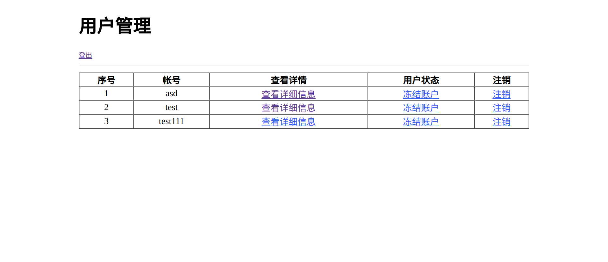
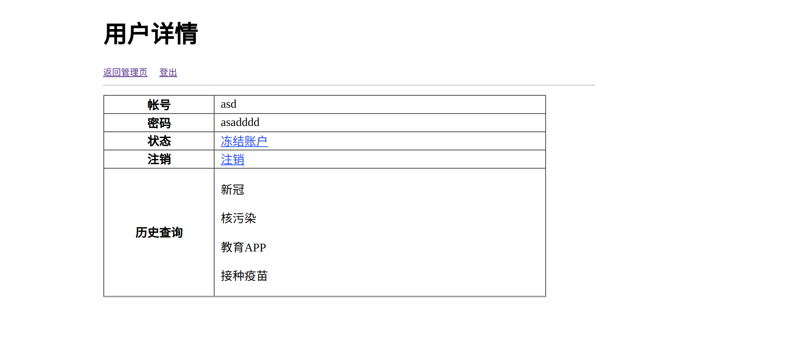
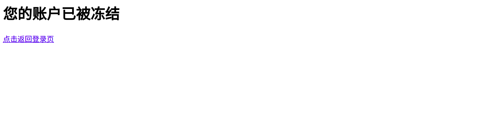

一、需求
- 基于第一个项目爬虫爬取的数据，完成数据展示网站
- 基本要求
- 用户注册登录，非注册登录用户不可查看
- 用户注册、登录、查询数据入库
- 查询结果支持分页以及排序（第一次项目中已实现）
- 使用Echarts或者D3实现3个及以上分析图表（第一次项目中已实现1个）
- 添加管理端界面，可以查看用户操作记录以及管理（冻结注销）用户
- 扩展要求（非必须）
二、需求分析
由于需要实现用户的注册登录，因此我们需要新增一张表用于存储用户信息，且因为管理官可以冻结注销账户，因此表中需要一个属性表示用户当前状态，新建一张user表如下：
1
2
3
4
5
6
7
| +---------+-------------+------+-----+---------+-------+
| Field | Type | Null | Key | Default | Extra |
+---------+-------------+------+-----+---------+-------+
| account | varchar(30) | NO | PRI | NULL | |
| passwd | varchar(30) | NO | | NULL | |
| state | tinyint(1) | NO | | 1 | |
+---------+-------------+------+-----+---------+-------+
|
除此之外，我们要存储用户的查询记录，因此新建一张history表如下：
1
2
3
4
5
6
7
| +---------+-------------+------+-----+---------------------+-------------------+
| Field | Type | Null | Key | Default | Extra |
+---------+-------------+------+-----+---------------------+-------------------+
| account | varchar(30) | NO | | NULL | |
| query | text | NO | | NULL | |
| time | datetime | NO | | cast(now() as date) | DEFAULT_GENERATED |
+---------+-------------+------+-----+---------------------+-------------------+
|
除了新增数据库表之外，还需要新增注册登录页、图表展示页、用户管理页、用户详情页、冻结页五个页面。
三、注册登录
注册登录页如下：

注册登录功能前端使用form表单实现，通过POST方式提交数据，后端解析POST数据并从数据库中查询相关信息分析返回对应的页面：

以下是后端部分代码：
1
2
3
4
5
6
7
8
9
10
11
12
13
14
15
16
17
18
19
20
21
22
23
24
25
26
27
28
29
30
31
32
33
34
35
36
37
38
| app.post('/login', function (req, res) {
var account = req.body.account;
var passwd = req.body.passwd;
user.verify(account, passwd, function(account, state, ver) {
if (ver) {
res.cookie('account', account);
res.cookie('state', state);
if (!state) {
res.redirect('/blockpage');
} else {
if (account.startsWith('admin')) {
res.redirect('/admin');
} else {
res.redirect('/index');
}
}
} else {
res.redirect('/');
}
});
});
app.post('/register', function (req, res) {
var account = req.body.account;
var passwd = req.body.passwd;
if (user.register(account, passwd)) {
res.cookie('account', account);
res.cookie('state', 1);
if (account.startsWith('admin')) {
res.redirect('/admin');
} else {
res.redirect('/index');
}
} else {
res.redirect('/');
}
});
|
四、图表展示页
图表展示页中共实现了四张图表。第一个是实时热搜，通过分析history表中的数据得到搜索数量最多的四个关键词以及他们每小时内被搜索的次数通过使用Echarts绘制，结果如下：

第二张图使用Echarts中的旭日图展示热搜新闻的来源，以及每个来源的新闻中不同关键词被搜索的比例：

通过点击来源可以进一步查看每个来源的热搜关键词的比例。
第三张和第四张图均是采用Echarts中的树状图分析新闻关键词热度和新闻标题的热度。新闻关键词可以直接统计词频得到，新闻标题首先进行分词后再统计词频得到：

五、用户管理页
用户管理页界面如下：

用户详情页界面如下：

这两个页面均为管理员帐号才能够进入，可以通过点击页面上的选项对用户进行管理：冻结帐号、取消冻结、注销、查看详情。这些动作均通过POST和Ajax实现：
部分后端代码：
1
2
3
4
5
6
7
8
9
10
11
12
13
14
15
16
17
18
19
20
21
22
23
24
25
26
27
28
29
30
31
32
33
34
35
36
37
38
39
40
41
42
43
44
45
46
47
48
49
50
51
52
| app.get('/admin', function(req, res) {
var act = req.cookies.account;
if (act) {
if (act.startsWith('admin')) {
query.query_users(function(list) {
res.render('admin', {
"users": list
});
});
} else {
res.redirect('/index');
}
} else {
res.redirect('/');
}
});
app.get('/detail', function(req, res) {
var account = req.query.account;
var act = req.cookies.account;
if (act) {
if (act.startsWith('admin')) {
query.query_detail(account, function(dic) {
res.render('detail', dic);
});
} else {
res.redirect('/index');
}
} else {
res.redirect('/');
}
})
app.post('/block', function(req, res) {
var jsonStr = JSON.parse(Object.keys(req.body)[0]);
user.block(jsonStr.account);
res.send({"status":200})
});
app.post('/unblock', function(req, res) {
var jsonStr = JSON.parse(Object.keys(req.body)[0]);
user.unblock(jsonStr.account);
res.send({"status":200})
});
app.post('/close', function(req, res) {
var jsonStr = JSON.parse(Object.keys(req.body)[0]);
user.close(jsonStr.account);
res.send({"status":200})
});
|
前端部分的js：
1
2
3
4
5
6
7
8
9
10
11
12
13
14
15
| $(".btn").on("click",function(event){
event.preventDefault();
const a = $(event.currentTarget);
var body = {};
body['account'] = a.attr("atr");
$.ajax({
type: "POST",
datatype: "json",
url: a.attr("href"),
data: JSON.stringify(body),
success: function(result){
window.location.href='/admin';
}
});
});
|
用户帐号若被冻结，在登录之后会进入冻结页而无法使用服务：

六、总结
通过此次项目，主要使用了Node.js中的cookie-parser和body-parser实现用户的注册登录以及用户管理等功能，前端还使用Echarts实现了五张图表用于分析实时热搜，热搜来源以及新闻的关键词热度分析和标题热度分析，还在查询结果页实现了查询词的时间热度分析，除此之外，用户的注册登录，用户管理处的冻结、取消冻结以及注销等均通过POST方式以及Ajax提交实现。整个项目后端加爬虫代码量约为950行，前端使用ejs模板渲染引擎，代码量约为550行，算是比较大的一个项目了！
七、需求完成情况
视频展示：